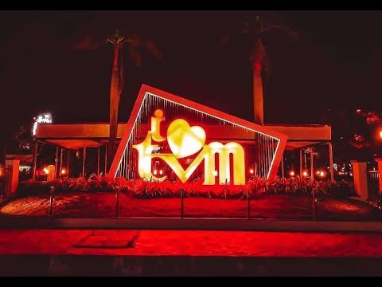
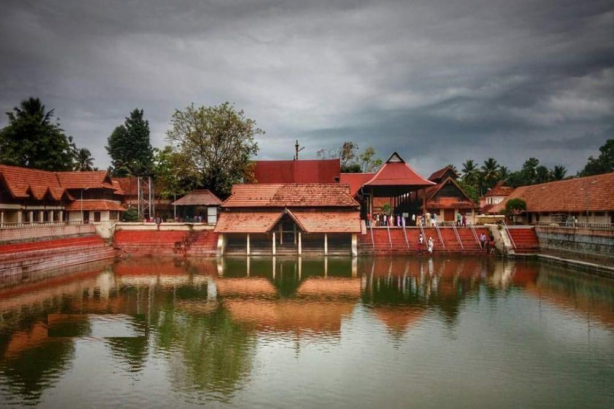

Kerala, southwestern coastal state of India. It is a small state, constituting only about 1 percent of the total area of the country. Kerala stretches for about 360 miles (580 km) along the Malabar Coast, varying in width from roughly 20 to 75 miles (30 to 120 km). It is bordered by the states of Karnataka (formerly Mysore) to the north and Tamil Nadu to the east and by the Arabian Sea to the south and west; it also surrounds Mahe, a segment of the state of Puducherry, on the northwestern coast. The capital is Thiruvananthapuram (Trivandrum).Although isolated from the Indian interior by the mountainous belt of the Western Ghats, Kerala has been exposed to many foreign influences via its long coastline; consequently, the state has developed a unique culture within the subcontinent, not only with a diverse religious tradition but also with its own language, Malayalam. Also notable is the high social status that continues to be accorded to women of Kerala, owing to the former strength of a matrilineal kinship system. Area 15,005 square miles (38,863 square km). Pop. (2011) 33,387,677.
Thiruvananthapuram
Thiruvananthapuram (or Trivandrum) is the capital of the southern Indian state of Kerala. It's distinguished by its British colonial architecture and many art galleries. It’s also home to Kuthira Malika (or Puthen Malika) Palace, adorned with carved horses and displaying collections related to the Travancore royal family, whose regional capital was here from the 18th–20th centuries.
view more
Kollam

Kollam is a city in the state of Kerala, on India's Malabar Coast. It’s known as a trade hub and for its beaches, like lively Kollam and secluded Thirumullavaram. Sardar Vallabhbhai Patel Police Museum has artifacts tracing the history of the police force. Nearby, Ashtamudi Lake is a gateway to the Kerala backwaters, a network of waterways rich with vegetation.
view more
Pathanamthitta

Pathanamthitta is a municipality situated in the Central Travancore region in the state of Kerala, India, spread over an area of 23.50 km². It is the administrative capital of Pathanamthitta district. The town has a population of 37,538
view more
Alappuzha
Alappuzha (or Alleppey) is a city on the Laccadive Sea in the southern Indian state of Kerala. It's best known for houseboat cruises along the rustic Kerala backwaters, a network of tranquil canals and lagoons. Alappuzha Beach is the site of the 19th-century Alappuzha Lighthouse. The city's Mullakkal Temple features a traditional design.
view more
Ernakulam

Sprawling, residential Ernakulam is known for Marine Drive, a busy waterfront promenade where boats offer backwater cruises. The Kerala Folklore and Hill Palace museums explore local heritage through art and antiquities. Shops along Broadway and on MG Road sell fabrics, crafts, and spices, while modern Lulu Mall also has a cinema and an ice rink. Simple eateries serve Keralan specialties and South Indian seafood.
view more
Thrissur

Thrissur is a city in the south Indian state of Kerala. It's known for sacred sites and colorful festivals. In the center is Vadakkumnathan Temple, dedicated to Lord Shiva and adorned with murals. The ornate, Indo-Gothic Our Lady of Dolours Basilica is nearby. To the north, Thiruvambady Temple is home to several elephants. Sakthan Thampuran Palace houses an archaeology museum with bronze statues and ancient coins.
view more
Palakkad

Palakkad, or Palghat, is a city in Kerala, a state in southwestern India. The 18th-century Palakkad Fort has sturdy battlements, a moat and a Hanuman temple on its grounds. North, on the Kalpathy River, the 15th-century Viswanatha Swamy Temple is the main venue of the famous Ratholsavam chariot festival. Northeast, near Malampuzha Dam, the town of Malampuzha has a rock garden created from recycled materials.
view more
Kozhikode
Kozhikode is a coastal city in the south Indian state of Kerala. It was a significant spice trade center and is close to Kappad Beach, where Portuguese explorer Vasco da Gama landed in 1498. The central Kozhikode Beach, overlooked by an old lighthouse, is a popular spot for watching the sunset.
view more
Kannur
Kannur is a coastal city in the south Indian state of Kerala. It was once an ancient trading port. Enduring monuments such as 16th-century St. Angelo Fort, once occupied by European colonial forces, show the city’s significant role in the spice trade. Housed in a former palace, the Arakkal Museum highlights Kerala's one Muslim royal family. The palm-fringed sands of Payyambalam Beach run along Kannur’s western shore.
view more
Kasargod

Kasaragod, formerly Kassergode in English, is a municipal town and administrative headquarters of Kasaragod district in the state of Kerala, India. Established in the year 1966, Kasaragod was the first municipal town in the district.
view more
Wayanad
Wayanad is a rural district in Kerala state, southwest India. In the east, the Wayanad Wildlife Sanctuary is a lush, forested region with areas of high altitude, home to animals including Asiatic elephants, tigers, leopards and egrets. In the Ambukuthi Hills to the south, Edakkal Caves contain ancient petroglyphs, some dating back to the Neolithic age.
view more
Malappuram
Malappuram is a city in the Indian state of Kerala, spread over an area of 58.20 km². The first municipality in the district formed in 1970, Malappuram serves as the administrative headquarters of Malappuram district. Divided into 40 electoral wards, the city has a population density of 1,742 per square kilometre
view more
Idukki

Idukki district is a densely forested, mountainous region in the south Indian state of Kerala. In the north, Anamudi mountain towers over Eravikulam National Park, where the rare, blue Neelakurinji flower blooms every 12 years. Nearby, Munnar is a hill station known for its sprawling tea plantations and Tea Museum. Farther south is the vast, curved Idukki Dam and Periyar National Park, a tiger and elephant reserve
view more
Kottayam
Kottayam is a city in the Indian state of Kerala. ... Kottayam is also called as “Akshara Nagari” which means the “city of letters” considering its contribution to print media and literature. Kottayam Town is the first town in India to have achieved 100% literacy (a remarkable feat achieved as early as in 1989).
view more